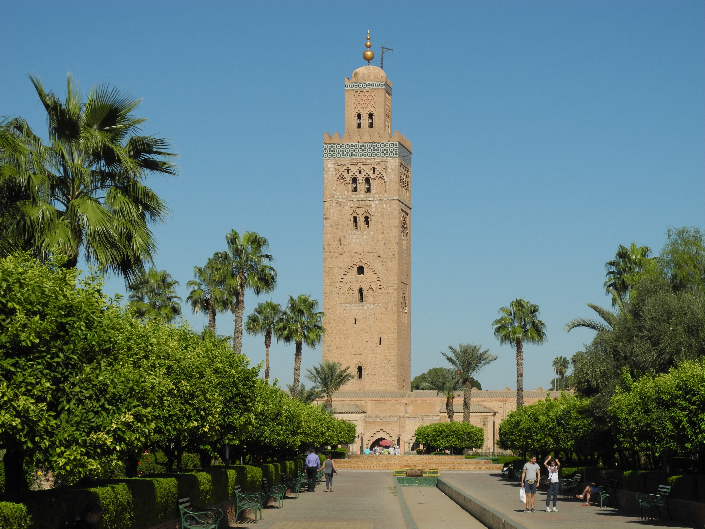
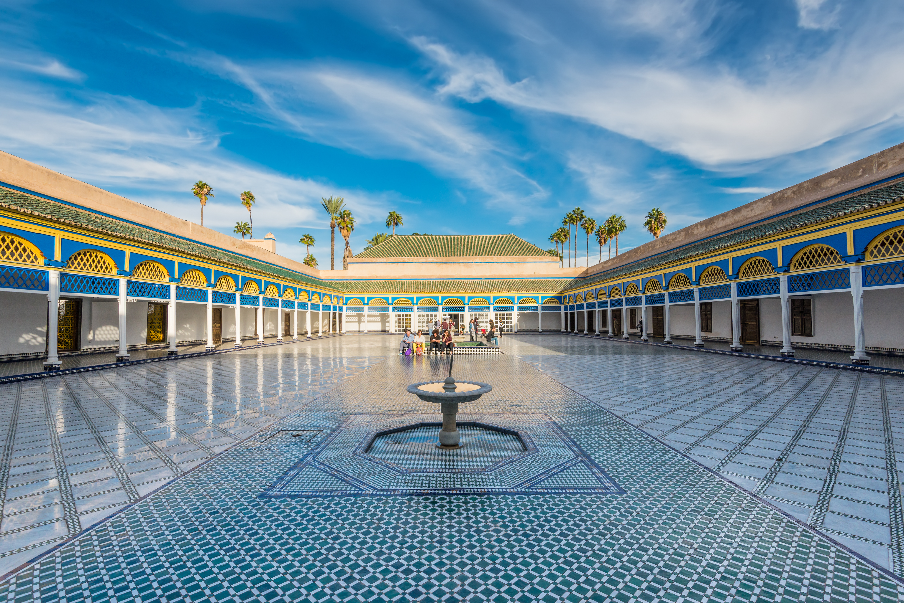
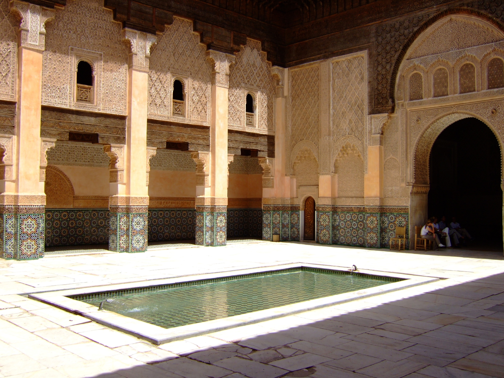

PatrimoTrip AI — pilote Marrakech
Trois monuments candidats. Photos et métadonnées acquises ; textes historiques à collecter puis à vérifier. Ce dossier n’active pas la reconnaissance du Maroc dans l’application.
Mosquée Koutoubia

Baca12 · CC BY-SA 4.0 · Source et licence
Minaret et jardin visibles ; image cohérente avec la Koutoubia et les métadonnées. Identité non certifiée par expertise indépendante.
Coordonnées déclarées : 31.624124, -7.993541 — à vérifier sur carte.
Palais El Bahia

Val Traveler · CC BY-SA 4.0 · Source et licence
Grande cour avec fontaines et galeries ; image cohérente avec le Palais de la Bahia et les métadonnées. Photographie haute résolution, non directement adaptée au profil utilisateur de 4 millions de pixels.
Coordonnées déclarées : 31.62159167, -7.98223056 — à vérifier sur carte.
Médersa Ben Youssef

Lundeux · CC BY-SA 2.5 · Source et licence
Cour, bassin, zelliges et stucs visibles ; image cohérente avec la médersa et les métadonnées. Sol fortement éclairé : prévoir d’autres vues pour la robustesse visuelle.
Coordonnées déclarées : 31.632, -7.986 — à vérifier sur carte.